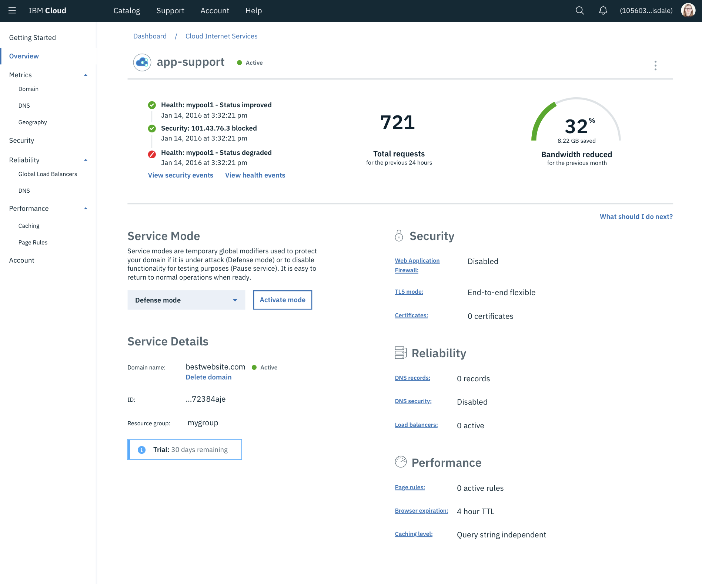
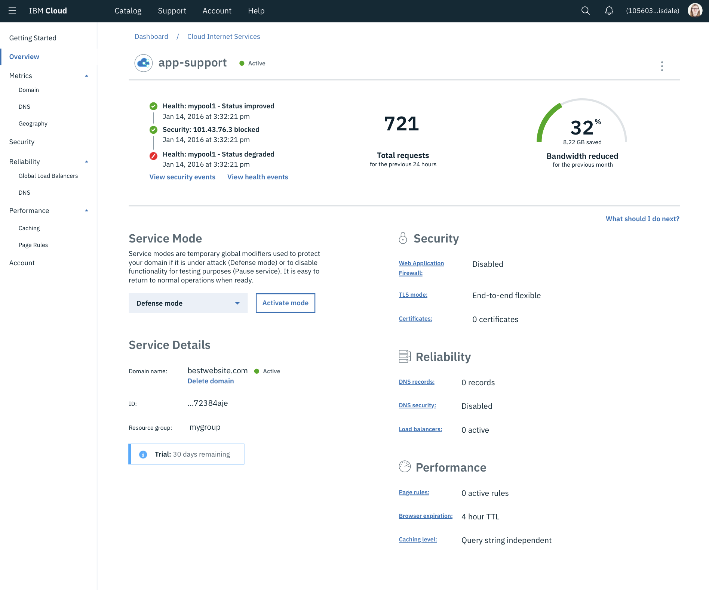
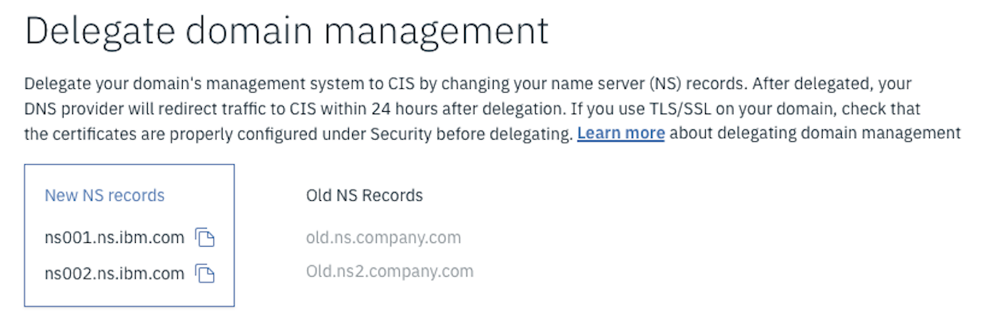

IBM Cloud Internet Services
Work with the renown internet security company, Cloudflare, to provide IBM Cloud customers with improved security, technology, and power.
Timeline: September 2017 - June 2018
 

Intro
The Cloud Internet Services offering is a joint partnership between IBM and the internet security and performance company, Cloudflare. In this partnership, IBM gained the suite of world class services that Cloudflare offered while Cloudflare would be able to break through into the enterprise tier clients that IBM has.
Project Kickoff
The partnership and project was initiated by our Network Offering Lead, Haechul. He was negotiating the deal with Cloudflare representatives and decided to bring our design team in to demonstrate how we would handle the project.
Our initial meeting was in the form of a two day Design Thinking workshop between Cloudflare project leadership and design team, including their Head and Director of Product. We ran through a series of team building and project scoping activities such as Hopes and Fears, Empathy maps, and As-Is journey maps. This left us with a good understanding of the goals of the Cloudflare teams, how they work, and what resources they had.
A few months later, when this project really got the go-ahead, I organized a number of meetings directly with the Cloudflare design teams so that I could get access to research and tips related to the services I was starting with. I intended to leverage as much of their experience and knowledge that I could.
Understanding
At this point I had been working with networking technology for over a year, giving me a relatively deep understanding of the inner workings of the Cloudflare service. For initial release, we were only targeting Caching, WAF, GLB, DDoS Protection, Encryption, DNS Records, and Monitoring/Metrics. A small subset of Cloudflare’s total services.
This range of services would enable a customer to significantly improve their applications performance and security with minimal effort. In terms of the experience, we were aiming for a few things:
- Enable the self serve simplicity that Cloudflare provides
- More control and information for our enterprise users
- Simplify and integrate the complex services into our platform
As I worked through designing each service, I started by introducing myself to the services as it was offered on Cloudflare’s platform. I configured a website and server to properly work with the targeted services, working with the dev teams to get more complex networks configured for testing where needed. Throughout this process I documented the user flows I went through to understand what steps were required and when. As I identified usability issues on the Cloudflare platform, I noted them and brought them to the Cloudflare team to dig deeper.
I was told that many Cloudflare platform issues were do to legacy systems or design system limitations. These were the areas where I noted the greatest potential for advancements in the experience.
With a more in-depth understanding of the product and how it works, I felt comfortable moving forward to plan testing and create some wireframes.
Research
I created a set of wireframes that I knew worked with our existing design system and maintained consistency with our platform. I used these wireframes to help direct the conversations with our teams. I have found that having a set of visuals, even in the most limited form, aligns the terminology a team uses and quickly identifies what questions still need to be asked.
I took the time to look at the rest of the market to get an understanding of other CDN and security providers such as Fastly, Akamai, and our own Security Group and Firewall offerings on IBM Cloud. I followed similar steps as my on-boarding to Cloudflare. Looking at competitors offerings and reading their documentation helped me to understand the variety of use cases our users may have.
I began launching usability tests with UserTesting and Invision prototypes. The tests were conducted remotely with the user having simple steps and goals while their screen was recorded. I configured the test for basic “First Use” situations as well as more complicated Web Application Firewall (WAF) configurations to validate that components and visuals were working as expected. The overall purpose of these was to quickly catch major user flow issues and understand if the taxonomy, hierarchy, and organization of the platform made sense.
For face-to-face feedback, our offering manager provided us with internal stakeholder teams. While internal is not ideal, these were teams that we expected to adopt the service in the near future. These sessions were monitored and open ended discussions about our UI and offering. Some of these users were engineers from our Kubernetes team as well as solution architects focused on documenting how services can be used together to form a solution.
We paired this feedback with research from the Cloudflare team and, with some updates, were confident that the designs and functionality we were offering were simple to use, aligned with the platform, and matched the mental models users would expect.
Challenges
One of the designs that took the longest to complete was our on-boarding process. Once a user places the order, their browser is navigated to the “overview” page of the service where they can see service functions and the primary navigation on the left. Our initial intent was to lock the user into a particular space with the required steps and guidance to finish setting up. Unfortunately, some technical complexities made that not an option. So the team and I persevered and look into other implementations.
A huge piece of on-boarding for Cloud Internet Services (and Cloudflare) is the user needs to change their domain’s name servers to direct to this service. Until they accomplish that, none of the changes they make on our service will affect them. However, domain name server changes can also make a website unavailable if the configurations aren't setup before the change. So there was a balance of, let people configure and twist the knobs of our service, but keep guiding them back to that required step of changing the name server.
When they are ready, changing name servers requires the user enters certain information from us on their domain managers site. Trying to guide a user through steps outside of our platform was new to me, so I looked to others with more experience. Using sites like UserOnboard.com I was able to get some strategies such as breaking down steps that go outside of the main experience by creating small, individual tasks that are easy to complete. Hopefully, This will get the user to return for guidance and be kept invested in the flow, regardless of where it takes them.

Results
Our initial offering launched with a bang! John Considine, our GM, announced the partnership and release with the CEO of Cloudflare, Matthew Prince, at IBM’s Think conference. It was one of the larger releases I had worked on since starting at IBM. The feedback we began receiving via face-to-face and NPS surveys was positive, and we continued to edit, improve, and grow the service. As an initial suite, it was relatively simple and straightforward as we hoped. The Cloudflare teams actually told us that we were a strong improvement in organization and interaction relative to their UI. Unfortunately, I was only able to continue working on the team for a few more months before transitioning to another project.
Related Tasks
I produced a set of demo videos showcasing the developed UI and providing instructional voice-overs for some of the functionality. These videos were used at IBM’s Think conference in Las Vegas at the CIS Demo Booth. Demo videos